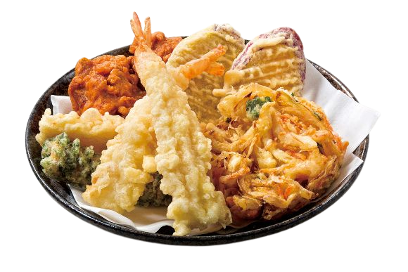

Crafted to satisfy your cravings.
Fried Juicy Gyoza
These pan-fried dumplings boast a delicate, crispy exterior that gives way to a burst of succulent filling with each bite. Made with a flavorful mixture of ground meat, cabbage, and aromatic seasonings.
Tempura Treasures

Lightly battered and expertly fried morsels of succulent shrimp, tender vegetables, and delicate seafood.Each golden bite reveals a perfect balance between the light, crispy exterior and the juicy, flavorful interior.
Golden Crispy Karaage
Marinated in a harmonious blend of soy sauce, ginger, garlic, and other secret spices, ensuring a burst of flavor with every bite. Coated in a light, crispy batter, our Karaage achieves the perfect balance of texture and taste.